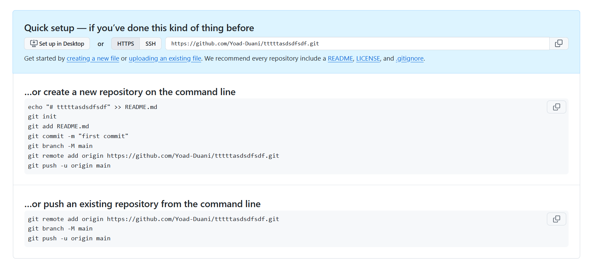

Understanding Git Remotes
Git remotes are simply references (pointers) to remote repositories—usually hosted on platforms like GitHub—that allow you to collaborate on code, fetch updates from others, and push your own changes.
Cloning a Repository and Checking Remotes
-
Clone from GitHub
This command copies the remote repository to your local machine.
Suppose you run: -
Check Remotes
Then run:
After the clone is complete, navigate into the project folder: - The
-vflag stands for "verbose" and shows you the list of remote connections and their corresponding URLs. You typically see something like:origin https://github.com/username/example-repo.git (fetch) origin https://github.com/username/example-repo.git (push)- Origin is the default name Git assigns to the main remote repository you cloned from.
- This means your local repo is linked to that remote URL.
When you use git pull, Git automatically fetches and merges changes from the origin remote by default (unless you specify otherwise), meaning it pulls updates from that URL.
Creating a New Local Repository and Connecting to GitHub
If you've ever tried to create a new empty repository on GitHub, you've probably seen these instructions:

As you can see, it adds a remote to the local Git repository
-
Initialize Local Repository
This creates an empty local Git repository in the
First, create a new project folder and initialize Git:new-projectfolder. -
Create a New Repo on GitHub
Go to GitHub, create a new repository, and copy its remote URL (for example,https://github.com/username/new-project.git). -
Add the Remote
Explanation:
Back in your local terminal, you add your GitHub repository as the origin remote:git remote add origin <URL>associates the name origin with the remote repository you just created on GitHub. This is the link between your local repo and the remote repo. -
Verify the Remote
You should now see something like: you can add some remotes to the same repository:
Use thegit remote -vcommand again: -
Push Your Code
This command sends your local commits from
Now you can push changes to your GitHub repo:<branch_name>to the origin remote on GitHub.
Default Branch Considerations
By default, many local Git installations name the initial branch master, whereas GitHub (and other platforms) may default to a branch named main. To rename the local branch to main, you can use:
This renames the current branch to main so that it matches the default naming convention on GitHub.
Understanding Git Push
When you run a command like:
you're sending (pushing) commits from your local <branch_name> to the remote repository (usually referred to as origin) on the same branch name (if you specify <branch_name> on both sides). For instance:
pushes your local main branch to the remote main branch on origin.
Pushing Local Branch to a Different Remote Branch
You don't necessarily have to push your local branch to the same remote branch name. For example, to push your local feature2 branch into the remote main branch, you can use:
This will cause the branch feature2 on your local to be published to the remote repository as main.
Setting Upstream with git push -u
Often, you want to link (or set upstream) between your local branch and a specific remote branch, so that you can simply type:
without specifying the remote name and branch every time. You can do this with:
The -u (or --set-upstream) flag sets your local main branch to track the main branch on origin. That way, if you are on your local main branch, you only need to type git push in the future.
NOTE: When you clone a repo, git take care for the default remote branch and link it to your local branch (usually
main->origin/main)
see Understanding Remote Tracking Branches
Error When No Upstream Is Set
If you try to push a branch that doesn't have an upstream set yet, you'll see an error like:
fatal: The current branch main has no upstream branch.
To push the current branch and set the remote as upstream, use
git push --set-upstream origin main
This simply means you need to tell Git where to push your local commits for that branch. Running the suggested command will set the upstream for the main branch on your local machine.
Example Output
When you successfully push, you might see output similar to:
main -> main meaning that your local main branch pushed to remote main branch.
Understanding Remote Tracking Branches
When you clone a repository or set up a new remote, Git automatically creates remote tracking branches. These are references in your local repository that track the state of remote branches. For example, origin/main is a remote tracking branch that represents the main branch on your remote named origin.
How Remote Tracking Branches Work
A remote tracking branch like origin/main is not an actual local branch that you can directly commit to. Instead, it updates whenever you do a git fetch or git pull to show the latest state of the remote's main branch.
Locally, when you run git log --oneline --graph
You might see something like this:
This means:
- HEAD -> main: You are currently on the local main branch.
- origin/main: The remote tracking branch (for your origin remote) is at the same commit (here, e0d3332), indicating your local main is in sync with the remote’s main branch.
Viewing Remote Branches
You can see what remote branches exist by running:
This command lists remote branches, such as:
Any remote tracking branch that appears here has a corresponding branch in the remote repository.
To get one of these branches locally, and start to work on that you can just run switch:
This will create a new local branch featureX and set it up to track the remote branch origin/featureX
NOTE: The old command used in the past:
so now when you run